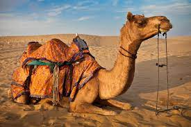
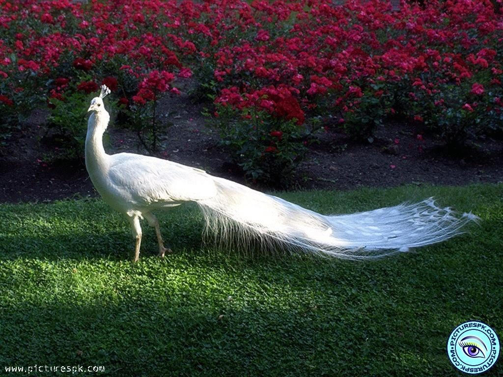

The dromedary also known as the dromedary camel, Arabian camel,[4] or one-humped camel, is a large even-toed ungulate, of the genus Camelus, with one hump on its back. It is the tallest of the three species of camel; adult males stand 1.8–2.4 m (5 ft 11 in – 7 ft 10 in) at the shoulder, while females are 1.7–1.9 m (5 ft 7 in – 6 ft 3 in) tall. Males typically weigh between 400 and 690 kg (880 and 1,520 lb), and females weigh between 300 and 540 kg (660 and 1,190 lb). The species' distinctive features include its long, curved neck, narrow chest, a single hump (compared with two on the Bactrian camel and wild Bactrian camel), and long hairs on the throat, shoulders and hump. The coat is generally a shade of brown. The hump, 20 cm (7+7⁄8 in) tall or more, is made of fat bound together by fibrous tissue. Dromedaries are mainly active during daylight hours. They form herds of about 20 individuals, which are led by a dominant male. They feed on foliage and desert vegetation; several adaptations, such as the ability to tolerate losing more than 30% of its total water content, allow it to thrive in its desert habitat. Mating occurs annually and peaks in the rainy season; females bear a single calf after a gestation of 15 months.

Peafowl is a common name for three bird species in the genera Pavo and Afropavo within the tribe Pavonini of the family Phasianidae, the pheasants and their allies. Male peafowl are referred to as peacocks, and female peafowl are referred to as peahens, even though peafowl of either sex are often referred to colloquially as "peacocks".[1] The two Asiatic species are the blue or Indian peafowl originally of the Indian subcontinent, and the green peafowl of Southeast Asia; the one African species is the Congo peafowl, native only to the Congo Basin. Male peafowl are known for their piercing calls and their extravagant plumage. The latter is especially prominent in the Asiatic speciertship ritual.